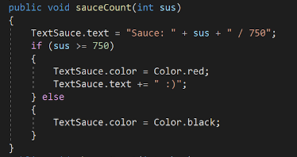
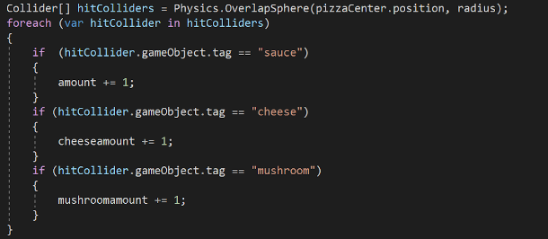

My ISP's concept is a work simulator where you play as someone who needs to get a job and work to pay their rent. Just like in real life, if you do not go to work on time, there will be consequences, and you might not be let in if you are late. You must pay rent on Saturday, so you must save your money. This game has choices that impact your experience, so you can play multiple times and still find new things. Our game also has a horror type minigame that can be played as much as once every day, and your choices affect what happens at night.
Motivation
My primary motivation actually came from making the game from the scheduling website. Making a game seemed fun, and being able to play a game our team made ourselves seemed exciting to us. In addition, I had created some games of his own, so we decided that he could guide the team with his experience. Along with that, we would be getting our hands on a new software and learning a new language, so this would develop our skills in coding as well. For the motivation behind the horror genre, we all agreed that this genre would be the best option for a short game.
Code Snippets

This function from the Pizza minigame is called everytime a new ball of pizza sauce gets put on or leaves the pizza, and it updates a GUI menu, showing how much sauce the pizza has. When the pizza is full, the text color changes to red and adds a smiley face in the text.

This code snipped creates an array of gameObjects that the pizza is holding, such as sauce balls, shredded cheese, and mushrooms. Then, the foreach statement finds the tag of all the gameObjects in the array, then counts the amount of each type is in the pizza. This statement happens once every frame, allowing for topping counters to be exact every single time.
Conclusion
All in all, this ISP was a rollercoaster journey, with many conflicts that me and my team would have to overcome. Many things had gone as expected, such as modeling and learning to use Unity going very smoothly with all my team members, though many more things had gone unexpectedly, such as the forced change to PlasticSCM, the huge time crunch due to AP exams, and lighting problems due to no prior experience.